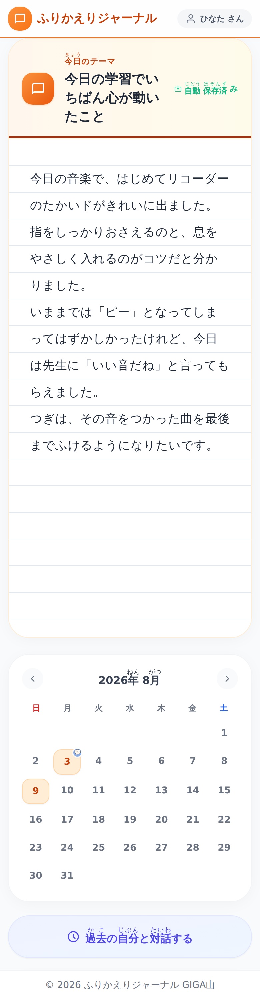
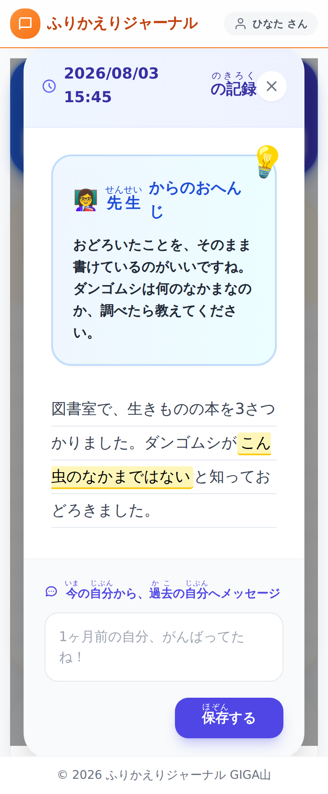
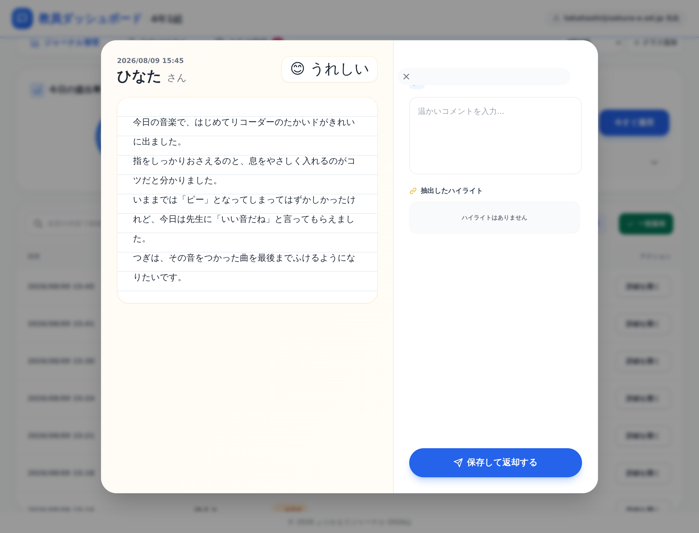

ふりかえりジャーナル
児童が今日の学びを書き、先生がその日のうちに返せるようにした無償のアプリです。 小学校の教員が作りました。
このページからは、ジャーナルを開けません
このアプリは、先生おひとりずつが、ご自分の Google アカウントで公開して使う形です。 共通の入口はありません。
- 児童のみなさんは、先生から配られた URL を開いてください。このページではありません。
- 先生方は、下の「入れかた」の手順で、ご自分のクラスの URL を作ってください。10 分ほどで終わります。
記録の置き場所は、コピーしたスプレッドシート 1 つだけです。 制作者を含め、ほかの誰のところにもデータは行きません。
どんなアプリか
ふり返りを書かせるところまでは、ノートでも進みます。難しいのはそのあとです。 40 冊を集めて、その日のうちに全部へひとこと返して、明日の朝までに返却する。 これが続かないので、ふり返りは「書かせただけ」で終わりがちになります。
集めるところと並べるところを画面にまかせれば、その時間はひとこと返すほうに戻せます。 スタンプ1つなら 1 人 3 秒、本文の一部を選んでコメントを付けるのも数十秒です。



使うときの流れ
- 先生が今日のテーマを決めます（曜日ごとに決めておくこともできます）。
- 児童が URL を開き、本文と気持ちを書いて提出します。写真も 1 枚つけられます。
- 先生が一覧で読み、スタンプ・全体コメント・本文の一部へのコメントで返します。
- 児童の画面に「新しいおへんじ」が出ます。カレンダーから過去の記録もたどれます。
- 学期末は CSV か PDF で書き出せます。1 か月以上前の自分の文章へメッセージも書けます。
入れかた
スプレッドシートをコピーして、公開の設定をするだけです。 準備するものは Google アカウント1つ。ふだんお使いの学校のアカウントで構いません。 10 分ほどで終わります。
配布用スプレッドシートは準備中です。 下のボタンのリンクは、テンプレートを作ったあとに使えるようになります。 いますぐ試すときは、 README の「手順B：ファイルを貼り付ける」 をご覧ください。入るものは同じです。
- 上のボタンを押し、「コピーを作成」を選びます。ご自分のドライブにファイルができます。
- できたファイルを開き、上のメニュー「ふりかえりジャーナル」＞「はじめの設定」を 1 回押します。 承認をたずねられたら許可してください。クラス名を入れると、必要なシートが作られ、 押したご本人がこのクラスの先生として登録されます。
- 「拡張機能」＞「Apps Script」を開き、右上の「デプロイ」＞「新しいデプロイ」＞種類は「ウェブアプリ」。 実行するユーザーは「自分」、アクセスできるユーザーは「同じ組織内の全員」にします。
- 表示された URL を児童に配れば準備完了です。先生ご自身が同じ URL を開くと、先生の画面が出ます。
コードは、コピーしたファイルの中に入っています。 貼り付ける作業はありません。記録もそのファイルの中に入るので、 どこにできたのかを探す必要もありません。
「はじめの設定」は、児童に URL を配る前に押してください。 押すまでは誰の画面にも「まだ準備中です」としか出ません。 先生が押すまで誰も先生になれない形にしてあるので、児童が先に開いても その子が先生になることはありません。
アクセスできるユーザーに「全員（匿名ユーザーを含む）」を選ばないでください。 この設定だと、アプリは誰が書いたのかを確かめられません。 学習の記録を名前つきで残すアプリなので、その状態では画面を出さずに止めます。 学校のアカウントを児童が持っていない場合は、このアプリは使えません。
2 通りの入れかたの全文は README、 毎日の進め方は 操作マニュアル にあります。作った理由と画面ごとの説明は 紹介記事にまとめました。
情報担当の先生へ
| 項目 | このアプリの場合 |
|---|---|
| フィルタリングで通すもの | アプリ本体が置かれる script.google.com だけです。
見た目のために丸い書体（Google Fonts）を読みますが、届かなくても動きます。 |
| 画面を作る部品 | 外から読み込みません。必要なものは全部アプリの中に持っています。 校内のフィルタリングで配信元が塞がれても画面は出ます。 |
| データの置き場所 | 公開した先生がコピーしたスプレッドシート 1 つだけ。 画像もそのファイルの中に入ります。外部のサービスへは何も送りません。制作者もデータを見られません。 |
| 要求する権限 | このスプレッドシート 1 つ（spreadsheets.currentonly）、
メニューの表示、メールアドレスの確認、そして Gemini を使うときだけ外部への通信。
ドライブ全体を読む権限は要求しません。 |
| 児童が入れる情報 | 学校の Google アカウントでログインした状態で開きます。 誰の記録かはサーバー側で確かめ、名前を画面から受け取りません。 |
| 先生用の操作 | テーマの配信・返却・名簿・書き出しは、このクラスの先生として 登録されたアカウントだけ。画面のボタンを隠すのではなく、サーバー側で確かめています。 |
| AI（Gemini） | 使うかどうかは先生が決めます。API キーを入れたときだけ動き、 作られた文章は先生が確認してから返却されます。児童へ直接は届きません。 |
| 費用・アカウント登録 | どちらもありません。MIT ライセンスで公開しています。 |
シートを点検する・直す
コピーしたスプレッドシートを開くと、上のメニューに「ふりかえりジャーナル」が出ます。 「シートを点検する」で中の作りがアプリの想定どおりかを確かめられ、 「シートを直せる範囲で直す」で足りないシートや列を足せます。先生の画面の「クラス設定」からも同じことができます。
アプリは見出しの名前で列を探します。列を並べ替えても動きますし、 メモ用の列を右に足していただいても構いません。 見出しの名前を変える・列を消すと、その列の読み書きだけが止まります。 点検はそれを名指しで教えます。中身がずれている疑いがあるときは、勝手に直さずに人へ回します。
できないこと
正直に書いておきます。1 つのファイルが 1 つのクラスなので、 2 クラス受け持つ先生はコピーを 2 つ作ってください（URL も 2 本になります）。 画面は自動では更新されず、最新の状態はボタンで読み直します。オフラインでは使えません。 学校のアカウントを持っていない児童は参加できません。 心のバイタルの変化検知は診断ではありません。必ず対面の様子と合わせてお使いください。